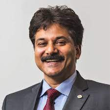

Organising Committee

Ravi Kumar NV
IIT Madras

Sanjay Mathur
University of Cologne
Under the Institute of Eminence (IOE) initiative by the Govt. of India, a Center of Excellence on Materials and Manufacturing for Futuristic Mobility has been established at IIT Madras. Ceramic Technologies Group (CTG) is one of the verticals of this center, geared towards developing ceramic technologies and providing innovative solutions paving the way for revolutionizing the concept of futuristic mobility. The group has been set up by uniquely combining experts from various science and engineering departments of IIT Madras and abroad.
The Ceramic Technologies Group focuses on the intelligent design of ceramics, from electronic structure calculations & atomistics to device fabrication. The current ceramic research in the country is quite dispersed, and the research activities in national laboratories/organizations are predominantly limited to strategic ceramics, which are hardly published and not available in the public domain. The research leaders at the center will facilitate closing the gap between lab-scale research and industrial applications. The center is led by a team of Principal Investigators, Prof. Ravi Kumar N.V from IIT Madras, India, Prof. Sanjay Mathur from University of Cologne, Germany, and Prof. Alexander Michaelis from Fraunhofer Institute for Ceramic Technologies and Systems IKTS, Germany. There are 11 Indian and 12 international co-investigators working on various research domains set by the centre. More information regarding the center and its activities can be found here.
IIT Madras
University of Cologne